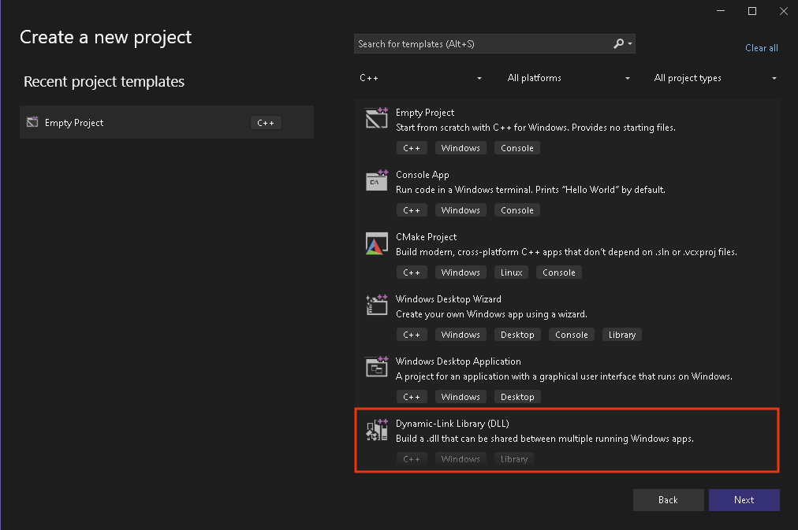
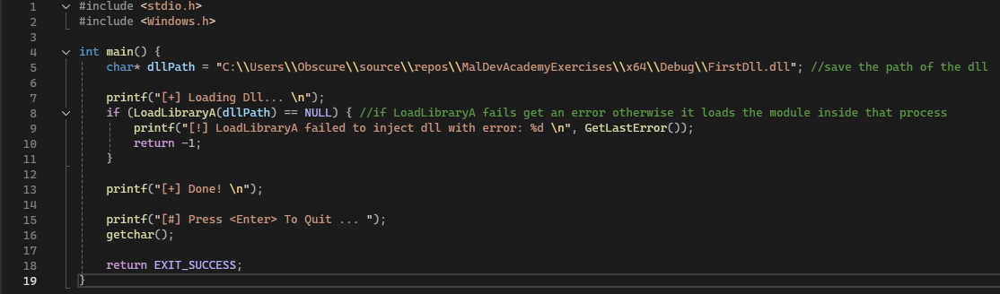
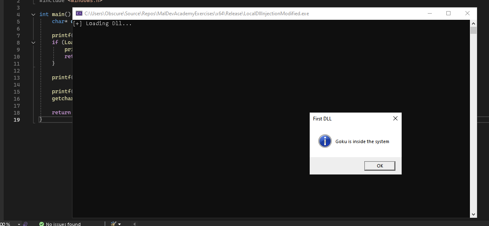
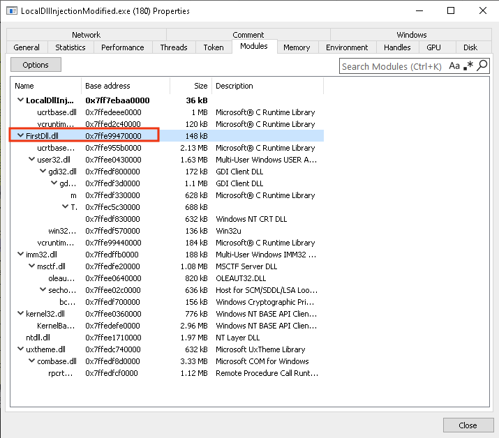

Local DLL Injection
Introduction
This module explores the usage of Dynamic Link Libraries (DLLs) as payloads and demonstrates how to load a malicious DLL file in the current process.
Creating a DLL
By opening Visual Studio, it is possible to create a DLL.

This demo will utilize a message box that appears when the DLL is successfully loaded. Creating a message box can be easily done with the MessageBox
WinAPI.

Local Injection
The DLL path is stored within the program as a string variabl. The function then loads the DLL into the address space of the calling process using LoadLibraryA, which in our case is the current process. Loading the DLL triggers the execution of its entry point and, consequently, the MsgBox function, causing the message box to appear.  As expected, the message box successfully appears after injecting the DLL. 
Analysis
For investigation, the first step consists of opening Process Hacker to inspect the running process and verify that the DLL has been successfully loaded into
its address space. Opening the "Modules" tab, the DLL's name should appear in the list of modules.

By analyzing the assembly code using IDA, it is possible to observe the program’s behavior at a low-level. No data is encrypted, which makes it possible to clearly see the DLL path
in plaintext. As shown in the figure below, the DLL path is stored on the stack in lpLibFileName. The program then calls the
LoadLibraryA function, passing this DLL path as input, which results in the DLL being loaded into the address space of the process.
If LoadLibraryA executes successfully, the program jumps to the right branch and prints "[+] Done!".